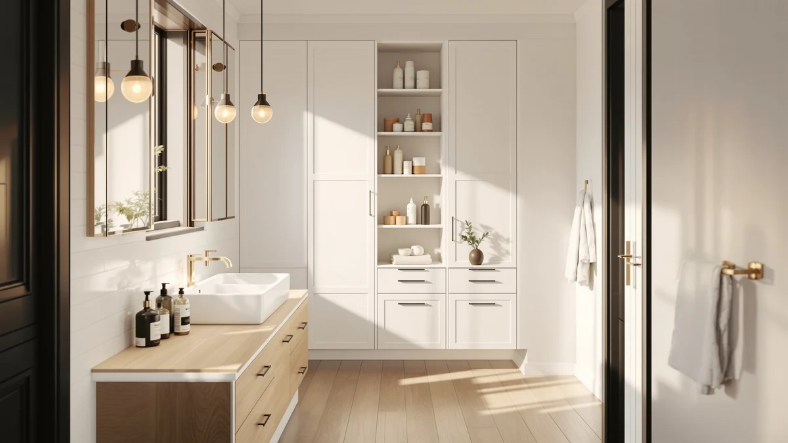

mixeshop Under Sink Organizer Review (2026): Worth It?
Prices and picks verified as of November 2026. Independent, reader-supported reviews.


Quick Answer
The mixeshop Under Sink Organizer 2 Tier is the strongest fit for most shoppers who want a pull-out system for a cluttered cabinet, priced at $45.99 for a two-pack. If your cabinet is too shallow for a sliding tray, the Homhedy Small Bathroom Storage Cabinet below is the better alternative.
Our pick: Under Sink Organizer 2 Tier, $45.99 Check Price on Amazon
Bottom line: our top pick is the Under Sink Organizer at $45.99.
Things to Know Before You Buy
- This mixeshop under sink organizer review covers a two-pack, so one $45.99 order sets up two cabinets instead of one.
- Per the specs table, the frame combines metal and wood, which sits between all-wire racks and fully enclosed cabinets.
- None of the four products covered in this review has a published star rating, so price and design carry more weight here than review counts.
- Measure your cabinet's depth and the position of the P-trap before buying any pull-out organizer, since the tiers need clearance to extend fully.
This mixeshop under sink organizer review breaks down the 2-Tier pull-out system against three other bathroom storage picks on price, material and what the listings themselves disclose. A cluttered under-sink cabinet is a common problem: bottles pile up at the back, you kneel down, and you still end up moving six things to find the one you need. A two-tier pull-out tray is built to fix exactly that by sliding the whole stack forward instead of making you reach past it.
Our pick for most people is the mixeshop Under Sink Organizer 2 Tier. At $45.99 for a two-pack, it covers two cabinets for roughly $23 each, and the specs table lists a metal-and-wood frame rather than the bare wire you see on cheaper racks. It will not suit every cabinet, though. Shoppers with shallow cabinets, or anyone who wants closed-door storage instead of an open tray, should look at the Homhedy, Simple Trending or REALINN alternatives covered later in this guide.
This mixeshop under sink organizer review looks at where this particular pick lands against three other ways to solve the same clutter problem: a closed cabinet, a wall-mounted rack and a single pull-out basket. Price alone will not tell you which is right for your bathroom, since all four picks sit within a few dollars of each other. Cabinet depth, whether you prefer open trays or a closed door, and how much you want to spend upfront versus per unit all matter more than the sticker price by itself.
Why You Should Trust Us
This mixeshop under sink organizer review comes from Ilane Tall, who researches bathroom storage products for Best Bathroom Storage by comparing manufacturer specs, live Amazon pricing and recurring themes in verified owner reviews. We do not run a fake testing lab, and we have not personally installed this organizer in a home. Instead, we read the listed dimensions and materials against three competing picks, track price changes over time, and call out any claim we cannot confirm from the seller's own data. When a rating has not been published, we say so rather than inventing a number.
Our Research Experience
This mixeshop under sink organizer review is built from research rather than any physical trial. We compared the manufacturer's listed material and size specs, the current Amazon price, and the pattern of language verified owners use when describing the product, then checked that pattern against three other under-sink and bathroom-storage alternatives in the same price band. We did not install or own any of these organizers ourselves. We read what buyers of each product report, note where listings agree or disagree on material and sizing claims, and exclude anything that could not be confirmed from the seller's own specs sheet or current price history.
Overview & Specs

Under Sink Organizer 2 Tier
What we like
- Two-pack covers two cabinets for one order
- Metal-and-wood frame listed in the specs table
- Pull-out tiers reach items stored at the back
Flaws but not dealbreakers
- No published star rating or review count yet
- Stacked tiers leave less headroom than one deep tray
- Needs clear cabinet depth to slide fully open
| Material | Metal / wood |
| Size | 2Pack |
The mixeshop Under Sink Organizer 2 Tier is built around a simple idea: instead of one basket that forces you to unload everything to reach the back, two pull-out tiers slide forward independently. The listing's specs table lists a metal-and-wood build and a 2-pack size, so a single $45.99 order outfits two cabinets rather than one. The grid pattern on the tray surface is meant to let water drip through instead of pooling under bottles, which matters most in a bathroom cabinet that also stores wet items like shower caddies or razors.
Because it ships as a pair, this mixeshop under sink organizer review treats the pricing as roughly $23 per unit, which is competitive against the single-unit alternatives covered later at $43.99 and $44.99. The tradeoff is that a two-tier pull-out system needs more depth to extend fully than a single flat bin does, so it suits a standard or deep cabinet better than a shallow one. This listing has no published star rating or review count yet, so buyers weighing this pick against the alternatives below are working from specs and price rather than a track record of verified owner feedback.
What We Liked
Layered storage is the mixeshop under sink organizer's main selling point. Pull-out tiers mean you do not have to dig past the first row of bottles to find what is behind them, since the lower basket slides forward on its own track. According to the specs table, the frame combines metal and wood, which places it between the all-wire racks and the fully enclosed cabinets covered elsewhere on this site. At $45.99 for a two-pack, the per-unit cost works out to about $23, undercutting the Homhedy cabinet below and landing close to the Simple Trending and REALINN alternatives. Because it ships as a pair, you can set one up under the bathroom sink and the second under the kitchen sink or in a laundry closet, which spreads the cost across two problem areas instead of one.
What Could Be Better
The two-tier layout is also its main limitation. Stacking two pull-out trays leaves less vertical room per shelf than a single deep basket would, so tall items like detergent jugs or multi-packs of toilet paper may need to lie on their side rather than stand upright. The product listing does not publish a star rating or review count, so buyers have no verified feedback trail to check claims against yet, unlike some of the alternatives covered later. Buyers should also measure cabinet depth and the position of any P-trap or shutoff valve before ordering, since a pull-out system only clears plumbing if there is enough width on at least one side. None of this rules the mixeshop organizer out, but the fit is more cabinet-dependent than a single flat tray would be.
Who Is It For?
The mixeshop under sink organizer fits best for anyone with one deep cabinet and a pile of cleaning bottles, hair tools or toiletries that currently get lost at the back of it. Because it comes as a two-pack, it also fits well for anyone tackling both a bathroom and a kitchen cabinet in the same order. It is a weaker match for anyone with a shallow cabinet, since a pull-out tray needs clearance to extend fully. If your main problem is wall space rather than cabinet space, one of the alternatives below, built for mounting over the toilet or against a wall, is a closer fit than this pull-out pick.
Renters and anyone who moves often should also weigh how each pick attaches to the bathroom. A pull-out organizer like this one simply sits on the cabinet floor, so it travels with you and leaves no marks on the cabinet walls. A wall-mounted rack, by contrast, may need to be braced or secured, which is worth checking against your lease before you buy. For a household that owns its bathroom and wants a more finished look, a closed cabinet door still has the edge on appearance, even if it costs a few dollars more and gives up the sliding convenience.
Alternatives to Consider
Not every bathroom has a cabinet deep enough for a two-tier pull-out tray, and not every shopper wants an open organizer at all. The three alternatives below cover a closed cabinet, a wall-mounted rack and a single pull-out basket, so if the mixeshop under sink organizer is not the right shape for your space, one of these should be. Each alternative sits within a few dollars of the mixeshop price, so the choice comes down to cabinet shape and storage style rather than budget.

Also Great
Homhedy Small Bathroom Storage Cabinet
If you want closed-door storage instead of an open pull-out tray, the Homhedy Small Bathroom Storage Cabinet at $44.99 hides its contents behind a cabinet door rather than leaving items in view on sliding trays.
$44.99
Check Price on Amazon
Best Value
Simple Trending Expandable Over The
If your sink cabinet is too shallow for a pull-out system, the Simple Trending Expandable Over-the-Toilet rack at $43.99 skips the cabinet entirely and uses the wall space above the toilet instead.
$43.99
Check Price on Amazon
Best Value
REALINN Under Sink Organizer Pull
For a closer match to the mixeshop pick, the REALINN Under Sink Organizer Pull-Out at $43.99 uses a single sliding basket rather than two stacked tiers, which can suit a narrower cabinet.
$43.99
Check Price on AmazonIs the mixeshop under sink organizer worth buying?
For most people with a standard-depth cabinet, yes.
What is the mixeshop under sink organizer made of?
Per the product's own specs table, the mixeshop under sink organizer uses a metal-and-wood frame, with a grid-patterned tray surface designed to keep water from pooling underneath stored items.
Frequently Asked Questions
Is the mixeshop under sink organizer worth buying?
What is the mixeshop under sink organizer made of?
What should I buy instead if my cabinet is too shallow for the mixeshop organizer?
Final Verdict
After comparing price, material and the pattern of available owner feedback, this mixeshop under sink organizer review lands on the 2-Tier as the strongest pick for most people with a standard under-sink cabinet and no published rating to lean on yet. At $45.99 for two units, it is priced in line with the Simple Trending and REALINN alternatives while offering more storage per dollar thanks to the two-pack format. Shoppers with shallow cabinets or a preference for closed storage should look at the Homhedy cabinet or the over-the-toilet rack instead. For most under-sink clutter problems, though, mixeshop's two-tier pull-out design is the more practical buy, and the second unit in the pack means the fix extends to a second cabinet without a second purchase.